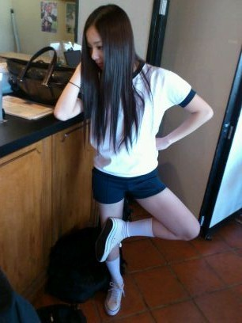
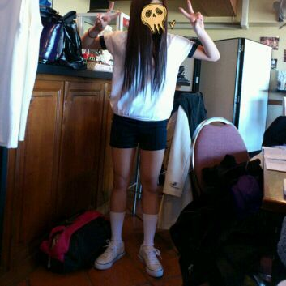
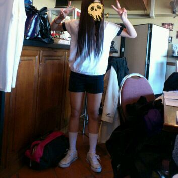

| 2012/05 11 Fri | 川村真洋 大阪に帰りました・ω・* ろってぃー♪ |
ほいっ♪
少しオフができたので
二泊だけだけど
実家に帰って
小中の友達、
高校の友達、
たくさん大好きなお友達と
会ってきましたあっ(⌒‐⌒)
友達の家に行くと
友達のマミーが
まひろの大好きな
サバやティラミスを
用意して待っててくれたり
みんなで、夜ご飯で
食べ放題に連れて行って
くれたり、
もう駅に着くーっ＼(^o^)／
ってメールしたら
体育祭の練習、
早く終わらせて、
急いで来てくれたり
ほんとに嬉しかった*・ω・*
みんな変わらず、
１人でずっと喋ってたり
ずっと意味分からんこと
してたり
みんなそんままやった^ω^
皆集まっても
来ない子もいるし、
その子らしくて
面白いと思いました(*^^*)笑
友達に、
『乃木坂はどう?^^
みんなボケたら、
つっこんでくれたり、
笑ってくれるぅ?』
って聞かれたから
『笑ってくれるよお、
まあ意味わからんことしてても
皆ほっといてくれるから
大丈夫やー♪』
ってゆうたら
『まあ、中学ん時も
そうやったもんなっ♪
意味わからんことばっかして
皆にほっとかれとったからな(>∀<)))』
って言われました...笑
まあ、こうゆう会話が
懐かしかったりしてねっ...^ω^
みんな、面白い人ばっかや...
あっ、
あと、今、
公式ホームページ☆の方で
『乃木坂ってここ』
やってるんで、
見てくだちい(*^^*)笑
★デートでどんな鳥
探してたのかな?
☆デートの時も言ったけど
なんとも言えない鳥なのっ>_<*笑
★狼に口笛を、は
どうやって短縮して呼ぶの?
☆メンバーでは、オオカミ
ってゆってますよん^ω^
★化粧品は何使ってるの?
☆まひろ、Kateが多いです^ω^〃
★そう言えば、
紅茶ってぃーって
自己紹介の言葉とかあるの?
☆特にないんですぅぅ?
やっぱあった方が
いいんですかなえ・з・`?
何かいいのあったら
教えてきこださいっ(⌒‐⌒)))
好きな紅茶はー?
まひろってぃーーー★☆★ 今日も１日頑張ろってぃー、
高校2年の16才
ろってぃーこと
川村真洋です*・ω・*
とかかなあ(・ω・)?
★今度の個握もその髪型
リクエストしていい?
☆次かはわからないけど
また絶対やりますねっ=^ω^=
にひひっ♪
★デートの最後に
出てきた鳥の名前はぁ?
☆誰も知らない鳥*・ω・*
★みちのくライブで
ろってぃー!って叫んだん
届いた?
☆ばっちし届きましたようっ!!
ありがとーう♪
★普段、ONとOFFの切り替えは
意識されてることありますか?
☆なんやろうなぁ...・ω・?
なんかOFFの時でも
ちゃんと自覚持って
ピシッ!!としとかなって、
思っちゃう^ω^
★ワイルドだろう?
どうおもろい?
☆意味んかんないとこが
おもろいですっ=∀=!!笑
いつもコメント見て
笑ってるんですよおっ=^ω^=
★みちのく、雨の中
大変だったでしょ?
☆楽しかったら
雨でも大雨でも
何でもオッケーさっ♪^^にひひっ
★自分が生まれ変わるなら
何してる人になりたいですか?
☆難しいなぁぁ〜^〇^
男に生まれて、
いい仲間達と出会って
色んな経験して、
スポーツも勉強も遊びも
いっぱいしまくって大人に
なっていきたい(*^^*)
★GWどうやった?
楽しんだぁ?
☆ゆったり楽しめましたよう♪(⌒‐⌒)
★おいでシャンプー(B)の
ジャケットで
生駒ちゃんの後ろで
サッカーしてるの、
ろってぃー♪ぢゃない?
☆そうですっ♪!
よく分かりましたねいつ・∀・!
ぢゃあ、載せますWW


明日は、握手会*・〇・*
楽しみだなぁ〜(⌒‐⌒)
早く皆様に会いたいです〃ω〃
ではっ待ってます^^
のし。

明日は、握手会*・〇・*
楽しみだなぁ〜(⌒‐⌒)
早く皆様に会いたいです〃ω〃
ではっ待ってます^^
のし。